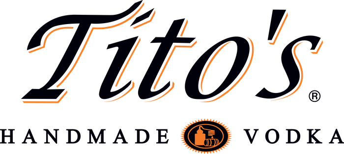
| March 12–13, 2027 | Wickenburg, AZThe 13th Annual Horse Sale · Est. 2015
Why Rancho Rio
Since 2015 The Horse Sale at Rancho Rio has set the bar.
Invitation Only
Every horse is nominated, vetted, and selected by sale staff. No grade horses. No exceptions. What hits the sale ring has already been through the toughest cut in the business.
Team Roping Capital of the World
Held on Rancho Rio's 55 desert acres in Wickenburg, in conjunction with the NTR National Finals — the biggest week on the team roping calendar, with buyers and consignors from across the U.S., Canada, and Mexico.
The Social Event of the Season
Presented by Tito's Handmade Vodka, this isn't just an auction — it's the week the entire sport shows up. VIP tables, a packed sale arena, and the best horseflesh in the country under one roof.
The Rope Horse
Rope horses have long been the workhorses of the Western industry—making seamless transitions from daywork to arena work, day in and day out, across the country.
From small ranchettes nestled in Arizona’s canyons to Big Sky Country’s vast expanses, rope horses have kept the sport of team roping alive while doing the legwork to keep the cattle industry and the Western way of life afloat, too, with little fanfare.
Once overlooked, with shaggy coats, big feet and wind-knotted manes, the rope horse has come of age alongside the team roping industry. Gone are the days of ‘good enough’ in today’s competitive team roping game.
Modern rope horses need to be the cream of the crop: still able to handle long days in the saddle punching cows, but with the refinement and skill of the finest show horses in any event. Good bone, a keen eye, a strong topline, sloping shoulders and a deep croup set the standard for the modern-day rope horse, and it takes great breeders and dedicated horsemen and horsewomen to develop those qualities.
At Rancho Rio, we honor the timeless tradition of the rope horse, highlighting the best the industry has to offer for ropers of every skill level. We take great pride in being the premier location for ropers to showcase their elite horses, connecting the rope horse with the roper the way today’s booming sport deserves.
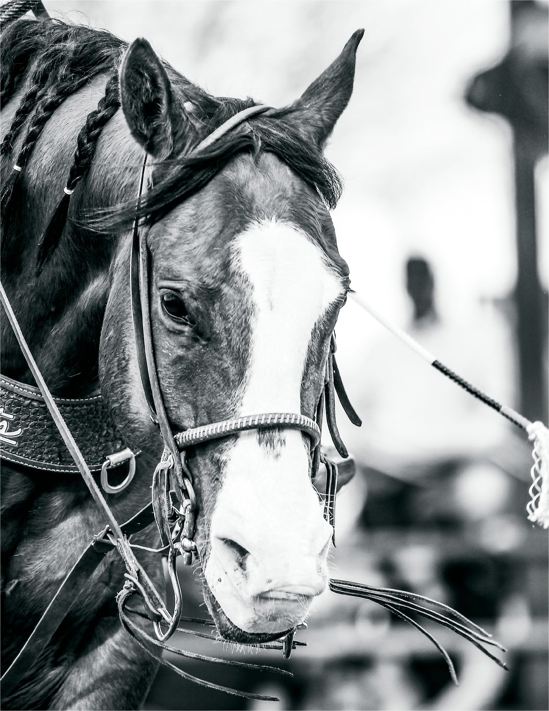
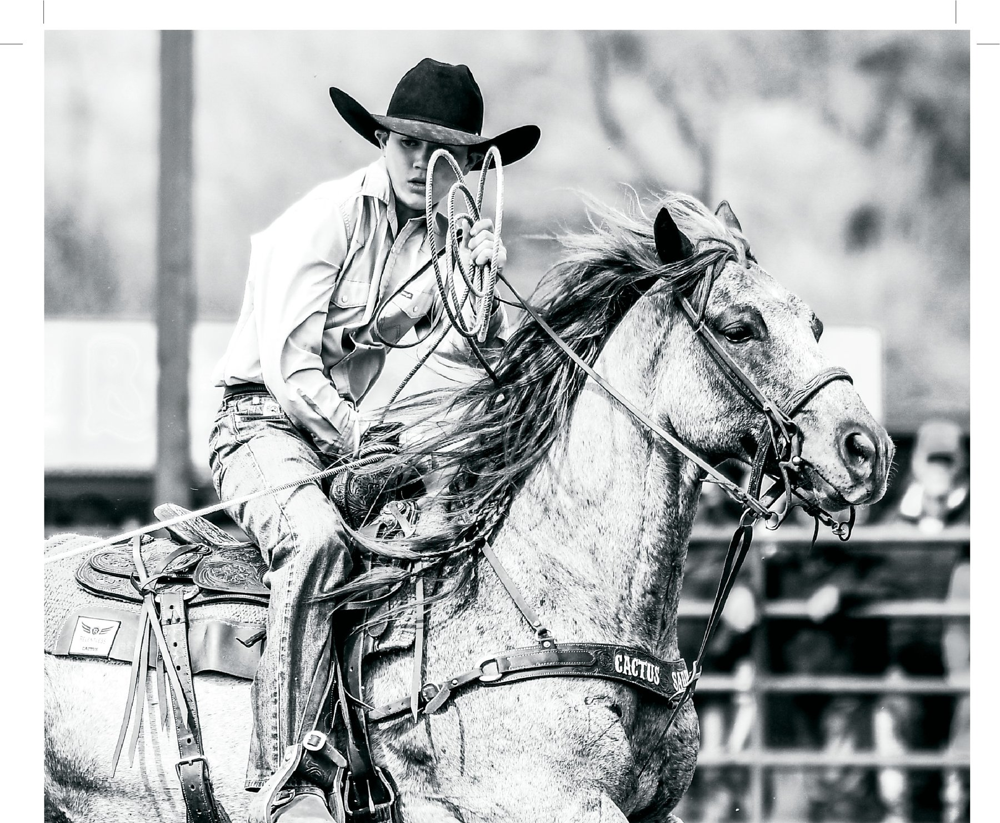
A good head horse is the quarterback of a team roping run, setting the pace and giving their heeler the perfect shot. In Arizona, where the roping scene is hotter than the midday sun, a solid head horse is worth their weight in gold.
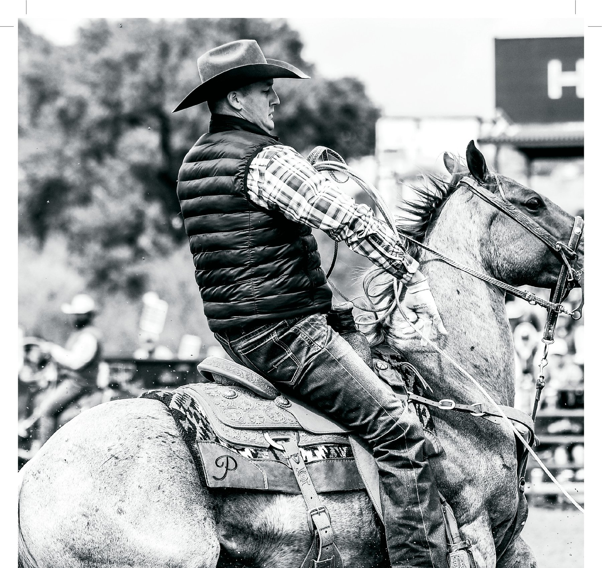
A great heel horse reads a steer like a book, rates just right, and knows when to stop on a dime to give you the perfect shot. They’ve got grit, heart, and that cow-smart intuition that turns good runs into great ones.
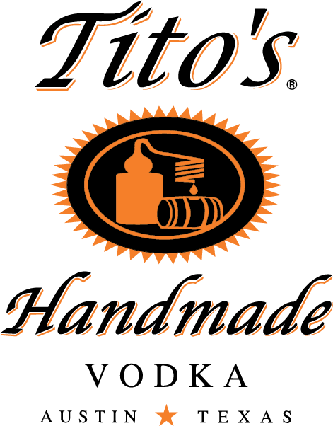
The Official Spirit of the Sale
The most fun sale you'll attend all year runs on Tito's — VIP bars, trackside pours, and a crowd that knows how to celebrate a good horse as much as they know how to buy one.
Sale Night
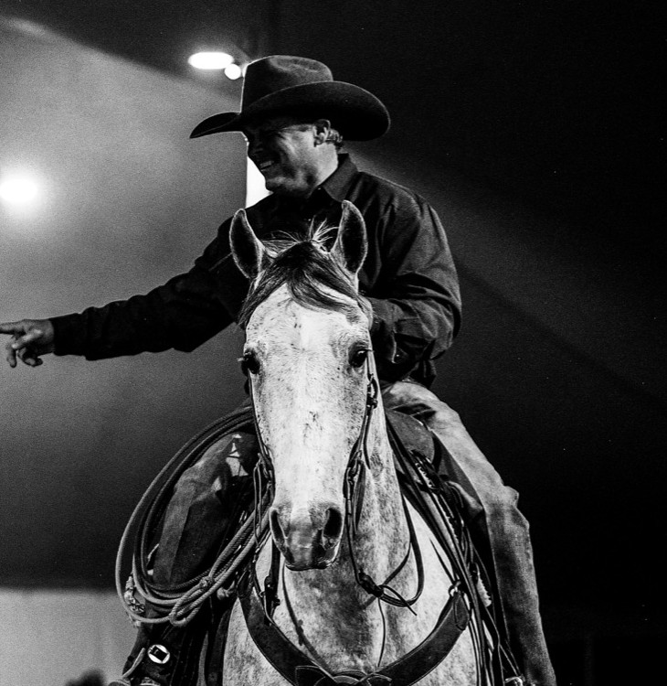
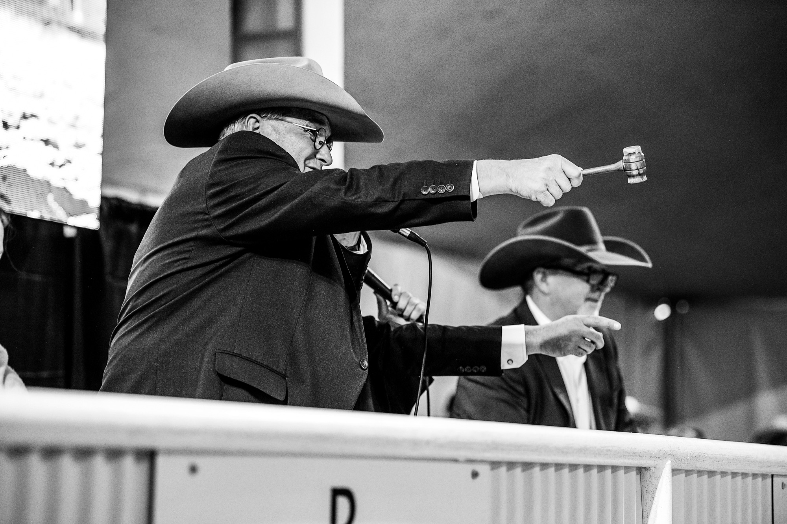
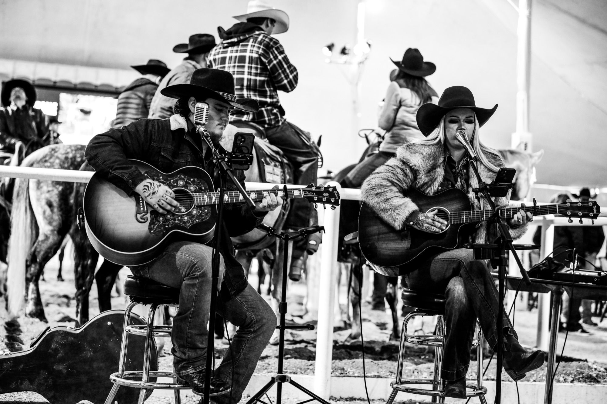
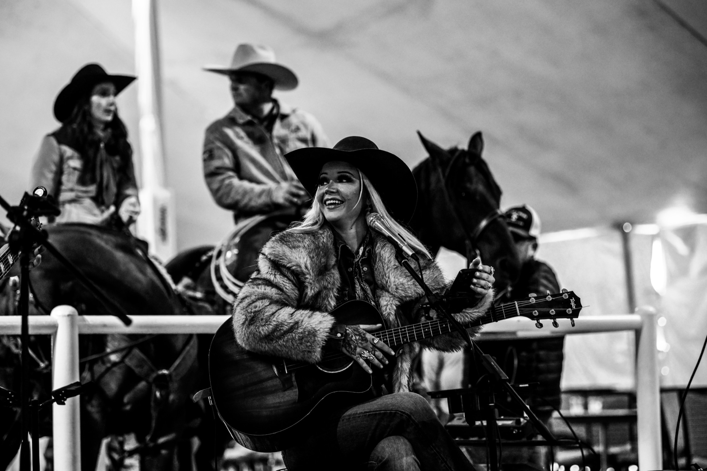
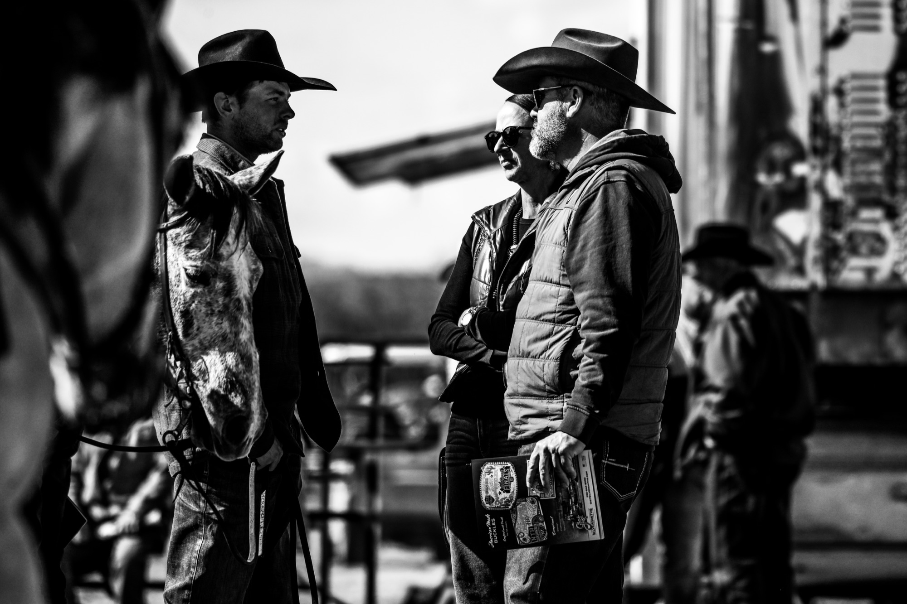
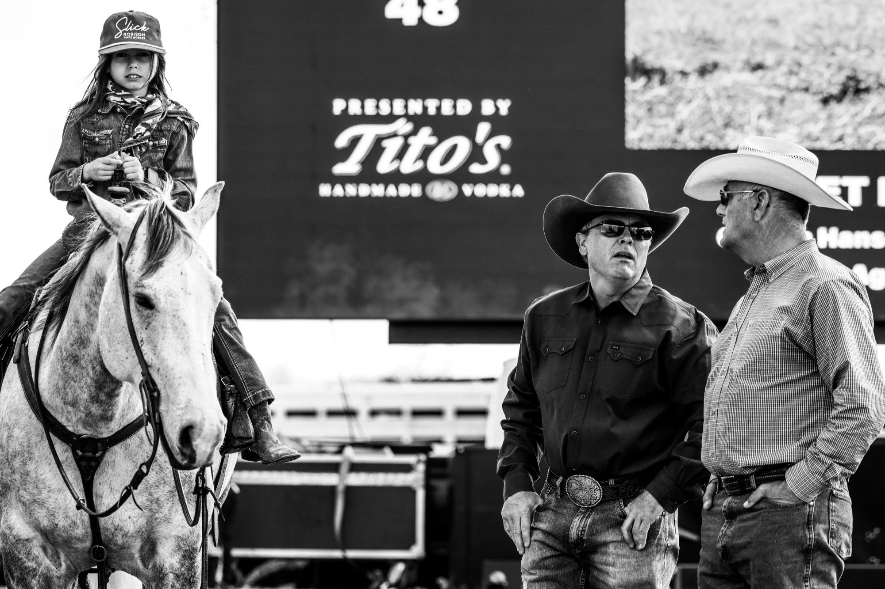
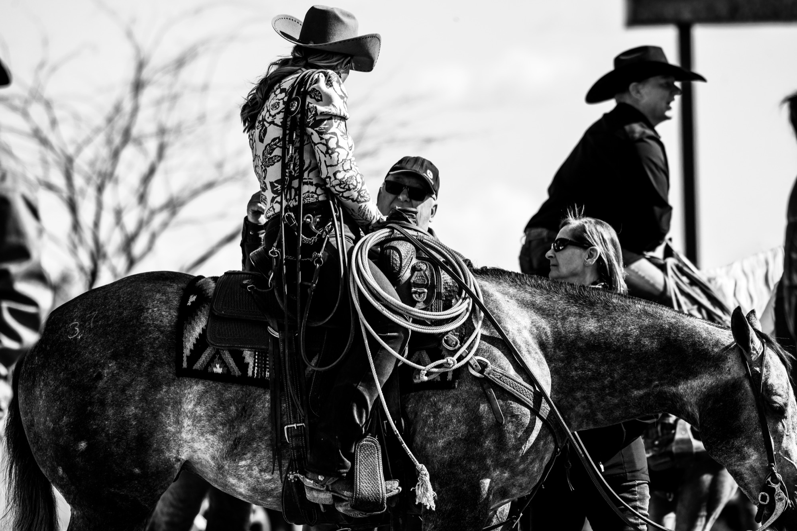
2027 Sale Schedule
Horse Sale Trailer/Office check-in, 10:00–Noon. Sale office opens 10:00 a.m. for bidder numbers & catalogs. Preview in the Main Arena, 2:00–5:00 p.m.
Sale office opens 10:00 a.m. Doors open 4:00 p.m. Sale starts 5:00 p.m. — live and online via CCI.live.
2024 High Sellers
 Sold
PR Curtis Katz · 2026
Sold
PR Curtis Katz · 2026
Consigned by Wilson Cattle Co. — sold for $210,000, the sale's all-time high seller.
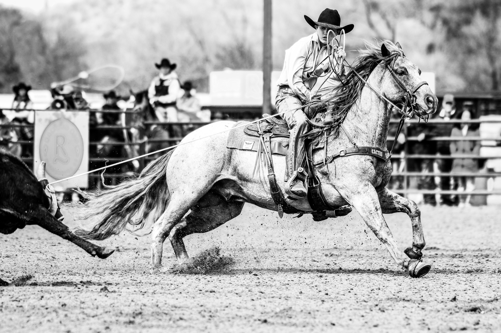
Overall average $51,154. Top 10 average $94,800 — the strongest top-end market of any rope horse sale in the country.
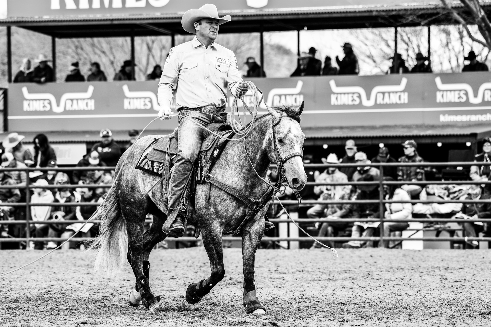
From a $15,541 sale average in 2018 to $51,154 in 2024 — the market for elite rope horses has never stopped climbing at Rancho Rio.
Consignors